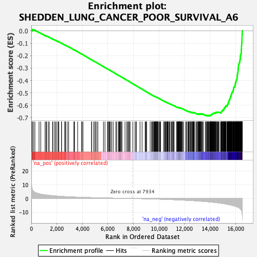
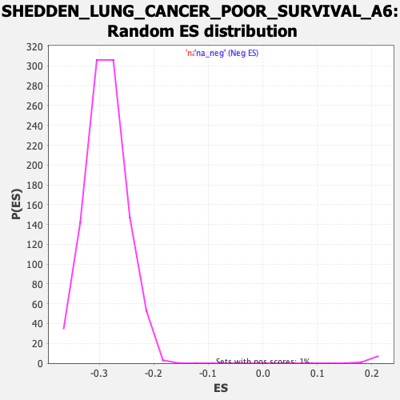

| | | Dataset | DE_genes2 |
| Phenotype | NoPhenotypeAvailable |
| Upregulated in class | na_neg |
| GeneSet | SHEDDEN_LUNG_CANCER_POOR_SURVIVAL_A6 |
| Enrichment Score (ES) | -0.68627656 |
| Normalized Enrichment Score (NES) | -2.3848953 |
| Nominal p-value | 0.0 |
| FDR q-value | 0.0 |
| FWER p-Value | 0.0 |
Table: GSEA Results Summary

Fig 1: Enrichment plot: SHEDDEN_LUNG_CANCER_POOR_SURVIVAL_A6
Profile of the Running ES Score & Positions of GeneSet Members on the Rank Ordered List
| PROBE | GENE SYMBOL | GENE_TITLE | RANK IN GENE LIST | RANK METRIC SCORE | RUNNING ES | CORE ENRICHMENT | | 1 | DDA1 | | | 54 | 7.304 | 0.0018 | No |
| 2 | ANKLE2 | | | 57 | 7.212 | 0.0067 | No |
| 3 | CARHSP1 | | | 71 | 6.810 | 0.0107 | No |
| 4 | SOD2 | | | 171 | 5.259 | 0.0082 | No |
| 5 | XPNPEP1 | | | 277 | 4.534 | 0.0049 | No |
| 6 | EIF4E2 | | | 602 | 3.408 | -0.0128 | No |
| 7 | CDK5R1 | | | 734 | 3.136 | -0.0187 | No |
| 8 | SLC16A3 | | | 1074 | 2.630 | -0.0379 | No |
| 9 | POMT2 | | | 1159 | 2.527 | -0.0414 | No |
| 10 | PNKP | | | 1192 | 2.475 | -0.0416 | No |
| 11 | SZRD1 | | | 1322 | 2.335 | -0.0480 | No |
| 12 | GNAS | | | 1405 | 2.265 | -0.0515 | No |
| 13 | CDKN2D | | | 1660 | 2.027 | -0.0658 | No |
| 14 | CD70 | | | 1691 | 1.997 | -0.0663 | No |
| 15 | PAX8 | | | 1826 | 1.901 | -0.0733 | No |
| 16 | STRN4 | | | 1908 | 1.833 | -0.0770 | No |
| 17 | TFPT | | | 2006 | 1.751 | -0.0818 | No |
| 18 | GCH1 | | | 2107 | 1.677 | -0.0868 | No |
| 19 | ADRM1 | | | 2152 | 1.649 | -0.0884 | No |
| 20 | TUBA4A | | | 2362 | 1.516 | -0.1003 | No |
| 21 | SNCG | | | 2366 | 1.513 | -0.0995 | No |
| 22 | PSMB2 | | | 2621 | 1.376 | -0.1143 | No |
| 23 | TAF7L | | | 2649 | 1.363 | -0.1150 | No |
| 24 | KAZALD1 | | | 2671 | 1.352 | -0.1153 | No |
| 25 | CDKN2A | | | 2805 | 1.282 | -0.1227 | No |
| 26 | GAPDH | | | 2920 | 1.230 | -0.1289 | No |
| 27 | YKT6 | | | 2922 | 1.229 | -0.1281 | No |
| 28 | GPR37 | | | 3340 | 1.061 | -0.1532 | No |
| 29 | MMP12 | | | 3347 | 1.059 | -0.1529 | No |
| 30 | VANGL1 | | | 3383 | 1.045 | -0.1543 | No |
| 31 | KCTD5 | | | 3627 | 0.959 | -0.1687 | No |
| 32 | PGK1 | | | 3946 | 0.851 | -0.1879 | No |
| 33 | PYGL | | | 3963 | 0.847 | -0.1883 | No |
| 34 | ESM1 | | | 4045 | 0.823 | -0.1927 | No |
| 35 | PPARD | | | 4718 | 0.633 | -0.2340 | No |
| 36 | SRD5A1 | | | 4725 | 0.631 | -0.2339 | No |
| 37 | TUBA4B | | | 4880 | 0.599 | -0.2431 | No |
| 38 | EGLN3 | | | 4986 | 0.573 | -0.2492 | No |
| 39 | MFSD12 | | | 5009 | 0.568 | -0.2501 | No |
| 40 | PITX1 | | | 5116 | 0.539 | -0.2563 | No |
| 41 | YEATS2 | | | 5210 | 0.516 | -0.2618 | No |
| 42 | ACOT7 | | | 5649 | 0.416 | -0.2887 | No |
| 43 | SLC25A10 | | | 5767 | 0.392 | -0.2956 | No |
| 44 | CSNK1D | | | 5963 | 0.353 | -0.3075 | No |
| 45 | CCDC93 | | | 6006 | 0.345 | -0.3099 | No |
| 46 | SLC2A1 | | | 6035 | 0.339 | -0.3114 | No |
| 47 | TFG | | | 6107 | 0.324 | -0.3155 | No |
| 48 | MUC16 | | | 6138 | 0.317 | -0.3172 | No |
| 49 | LSM4 | | | 6205 | 0.302 | -0.3211 | No |
| 50 | COL2A1 | | | 6297 | 0.287 | -0.3265 | No |
| 51 | PKM | | | 6414 | 0.262 | -0.3335 | No |
| 52 | DSP | | | 6624 | 0.219 | -0.3464 | No |
| 53 | CALM3 | | | 6692 | 0.204 | -0.3504 | No |
| 54 | UBE2V1 | | | 6822 | 0.181 | -0.3583 | No |
| 55 | CIAO1 | | | 6856 | 0.176 | -0.3602 | No |
| 56 | DUSP9 | | | 6910 | 0.168 | -0.3634 | No |
| 57 | UBAC1 | | | 6954 | 0.163 | -0.3659 | No |
| 58 | MYO7A | | | 6970 | 0.160 | -0.3667 | No |
| 59 | DGUOK | | | 6973 | 0.160 | -0.3667 | No |
| 60 | STMN1 | | | 7057 | 0.145 | -0.3718 | No |
| 61 | APOBEC3B | | | 7101 | 0.134 | -0.3744 | No |
| 62 | ERO1A | | | 7339 | 0.091 | -0.3890 | No |
| 63 | ZSCAN5A | | | 7473 | 0.070 | -0.3972 | No |
| 64 | RALA | | | 7561 | 0.055 | -0.4026 | No |
| 65 | AK4 | | | 7578 | 0.052 | -0.4035 | No |
| 66 | HCCS | | | 7660 | 0.039 | -0.4085 | No |
| 67 | PNP | | | 7676 | 0.037 | -0.4095 | No |
| 68 | SNX7 | | | 7740 | 0.027 | -0.4133 | No |
| 69 | TUBG1 | | | 7955 | -0.003 | -0.4266 | No |
| 70 | RPP25 | | | 8123 | -0.030 | -0.4370 | No |
| 71 | TNNT1 | | | 8212 | -0.044 | -0.4424 | No |
| 72 | HK2 | | | 8217 | -0.045 | -0.4426 | No |
| 73 | DENND1A | | | 8514 | -0.095 | -0.4609 | No |
| 74 | PPFIA1 | | | 8675 | -0.124 | -0.4708 | No |
| 75 | PFKP | | | 8915 | -0.174 | -0.4855 | No |
| 76 | EIF4EBP1 | | | 8951 | -0.182 | -0.4875 | No |
| 77 | NDUFA9 | | | 9015 | -0.195 | -0.4913 | No |
| 78 | RAB22A | | | 9032 | -0.200 | -0.4922 | No |
| 79 | IL1RAP | | | 9308 | -0.267 | -0.5091 | No |
| 80 | STC1 | | | 9424 | -0.296 | -0.5160 | No |
| 81 | GSS | | | 9460 | -0.304 | -0.5179 | No |
| 82 | SCD | | | 9481 | -0.309 | -0.5190 | No |
| 83 | FCHO1 | | | 9553 | -0.325 | -0.5232 | No |
| 84 | UBE2N | | | 9603 | -0.340 | -0.5260 | No |
| 85 | PKP2 | | | 9605 | -0.341 | -0.5258 | No |
| 86 | CLPB | | | 9625 | -0.346 | -0.5267 | No |
| 87 | ERN1 | | | 9655 | -0.355 | -0.5283 | No |
| 88 | NUP210 | | | 9679 | -0.363 | -0.5294 | No |
| 89 | AP2S1 | | | 9707 | -0.371 | -0.5309 | No |
| 90 | TRMU | | | 9730 | -0.377 | -0.5320 | No |
| 91 | NUP62 | | | 9747 | -0.384 | -0.5327 | No |
| 92 | TBRG4 | | | 9778 | -0.393 | -0.5343 | No |
| 93 | GINS3 | | | 9801 | -0.401 | -0.5354 | No |
| 94 | AP2B1 | | | 9819 | -0.404 | -0.5361 | No |
| 95 | RUVBL2 | | | 9831 | -0.409 | -0.5365 | No |
| 96 | RASAL2 | | | 9869 | -0.419 | -0.5385 | No |
| 97 | PRMT1 | | | 9903 | -0.430 | -0.5403 | No |
| 98 | PSMA5 | | | 9910 | -0.432 | -0.5403 | No |
| 99 | PSME3 | | | 9914 | -0.433 | -0.5402 | No |
| 100 | WDYHV1 | | | 9994 | -0.459 | -0.5448 | No |
| 101 | MED8 | | | 10030 | -0.469 | -0.5466 | No |
| 102 | PPM1G | | | 10081 | -0.484 | -0.5494 | No |
| 103 | MTCH2 | | | 10128 | -0.499 | -0.5519 | No |
| 104 | PHF10 | | | 10371 | -0.576 | -0.5665 | No |
| 105 | MAPKAPK5 | | | 10439 | -0.600 | -0.5703 | No |
| 106 | PPIF | | | 10468 | -0.609 | -0.5716 | No |
| 107 | RTCA | | | 10473 | -0.611 | -0.5714 | No |
| 108 | CORT | | | 10534 | -0.636 | -0.5747 | No |
| 109 | MAGEA3 | | | 10596 | -0.661 | -0.5780 | No |
| 110 | F12 | | | 10614 | -0.668 | -0.5786 | No |
| 111 | UGT8 | | | 10634 | -0.672 | -0.5793 | No |
| 112 | WDR62 | | | 10665 | -0.682 | -0.5807 | No |
| 113 | MRPL12 | | | 10668 | -0.683 | -0.5803 | No |
| 114 | RIPK2 | | | 10710 | -0.694 | -0.5824 | No |
| 115 | MRGBP | | | 10715 | -0.695 | -0.5821 | No |
| 116 | PRR7 | | | 10741 | -0.704 | -0.5832 | No |
| 117 | ELOVL4 | | | 10821 | -0.736 | -0.5876 | No |
| 118 | ARTN | | | 10846 | -0.741 | -0.5886 | No |
| 119 | ARL4D | | | 10859 | -0.745 | -0.5888 | No |
| 120 | THOP1 | | | 10958 | -0.785 | -0.5943 | No |
| 121 | SEPHS1 | | | 11002 | -0.803 | -0.5964 | No |
| 122 | KLC1 | | | 11038 | -0.818 | -0.5980 | No |
| 123 | MEMO1 | | | 11046 | -0.822 | -0.5979 | No |
| 124 | RGS20 | | | 11126 | -0.851 | -0.6022 | No |
| 125 | CMAS | | | 11143 | -0.858 | -0.6026 | No |
| 126 | LRFN4 | | | 11147 | -0.860 | -0.6022 | No |
| 127 | PSMA7 | | | 11159 | -0.865 | -0.6022 | No |
| 128 | CTSV | | | 11183 | -0.874 | -0.6030 | No |
| 129 | PLOD2 | | | 11385 | -0.962 | -0.6148 | No |
| 130 | ZNF248 | | | 11420 | -0.978 | -0.6163 | No |
| 131 | PMAIP1 | | | 11436 | -0.983 | -0.6165 | No |
| 132 | GPR19 | | | 11480 | -0.999 | -0.6185 | No |
| 133 | PCMT1 | | | 11481 | -1.000 | -0.6178 | No |
| 134 | SRM | | | 11503 | -1.004 | -0.6184 | No |
| 135 | PVR | | | 11541 | -1.025 | -0.6199 | No |
| 136 | PTTG3P | | | 11552 | -1.029 | -0.6198 | No |
| 137 | DNAJA1 | | | 11572 | -1.035 | -0.6203 | No |
| 138 | NUDT3 | | | 11612 | -1.051 | -0.6220 | No |
| 139 | PPP2R3C | | | 11614 | -1.052 | -0.6213 | No |
| 140 | ADM | | | 11627 | -1.057 | -0.6213 | No |
| 141 | HEXIM1 | | | 11631 | -1.059 | -0.6207 | No |
| 142 | ANGPT2 | | | 11673 | -1.077 | -0.6225 | No |
| 143 | CCT5 | | | 11693 | -1.083 | -0.6230 | No |
| 144 | SNRPB | | | 11698 | -1.085 | -0.6224 | No |
| 145 | NAB1 | | | 11736 | -1.100 | -0.6240 | No |
| 146 | CDYL | | | 11784 | -1.123 | -0.6261 | No |
| 147 | FKBP4 | | | 11802 | -1.134 | -0.6264 | No |
| 148 | NABP2 | | | 11855 | -1.156 | -0.6288 | No |
| 149 | NMU | | | 11938 | -1.191 | -0.6330 | No |
| 150 | HMGA1 | | | 12102 | -1.273 | -0.6423 | No |
| 151 | PA2G4 | | | 12113 | -1.278 | -0.6420 | No |
| 152 | ATG5 | | | 12158 | -1.310 | -0.6438 | No |
| 153 | CDKN2C | | | 12251 | -1.351 | -0.6485 | No |
| 154 | PGM3 | | | 12298 | -1.373 | -0.6504 | No |
| 155 | FGFR1OP | | | 12336 | -1.395 | -0.6518 | No |
| 156 | VEGFA | | | 12342 | -1.396 | -0.6511 | No |
| 157 | EIF4A3 | | | 12364 | -1.410 | -0.6514 | No |
| 158 | DTYMK | | | 12442 | -1.447 | -0.6552 | No |
| 159 | CAD | | | 12452 | -1.451 | -0.6547 | No |
| 160 | RC3H2 | | | 12478 | -1.467 | -0.6552 | No |
| 161 | HDAC2 | | | 12527 | -1.490 | -0.6572 | No |
| 162 | RFC2 | | | 12578 | -1.523 | -0.6592 | No |
| 163 | TCP1 | | | 12591 | -1.529 | -0.6589 | No |
| 164 | CMC2 | | | 12600 | -1.532 | -0.6583 | No |
| 165 | PDCD2 | | | 12648 | -1.560 | -0.6601 | No |
| 166 | PRIM2 | | | 12678 | -1.578 | -0.6608 | No |
| 167 | E2F8 | | | 12689 | -1.584 | -0.6603 | No |
| 168 | CCNE1 | | | 12690 | -1.585 | -0.6592 | No |
| 169 | XRCC3 | | | 12710 | -1.592 | -0.6593 | No |
| 170 | PRPS1 | | | 12730 | -1.603 | -0.6593 | No |
| 171 | ITCH | | | 12763 | -1.626 | -0.6601 | No |
| 172 | TOMM40 | | | 12767 | -1.627 | -0.6592 | No |
| 173 | CBS | | | 12888 | -1.707 | -0.6654 | No |
| 174 | RAN | | | 12950 | -1.743 | -0.6680 | No |
| 175 | SLC16A1 | | | 13020 | -1.780 | -0.6710 | No |
| 176 | UBE2D1 | | | 13044 | -1.793 | -0.6712 | No |
| 177 | GOLT1B | | | 13056 | -1.803 | -0.6706 | No |
| 178 | SLC9A2 | | | 13085 | -1.820 | -0.6711 | No |
| 179 | GABPB1 | | | 13127 | -1.841 | -0.6723 | No |
| 180 | ACD | | | 13133 | -1.845 | -0.6713 | No |
| 181 | CENPM | | | 13147 | -1.858 | -0.6708 | No |
| 182 | SMNDC1 | | | 13163 | -1.869 | -0.6705 | No |
| 183 | FAM216A | | | 13182 | -1.880 | -0.6703 | No |
| 184 | SEMA3A | | | 13206 | -1.894 | -0.6704 | No |
| 185 | ACP1 | | | 13234 | -1.913 | -0.6707 | No |
| 186 | SAR1A | | | 13246 | -1.920 | -0.6700 | No |
| 187 | NCBP1 | | | 13277 | -1.940 | -0.6705 | No |
| 188 | UBE2S | | | 13279 | -1.941 | -0.6692 | No |
| 189 | SNX6 | | | 13340 | -1.980 | -0.6716 | No |
| 190 | SEC23A | | | 13358 | -1.999 | -0.6712 | No |
| 191 | ACTR3 | | | 13382 | -2.016 | -0.6712 | No |
| 192 | DR1 | | | 13391 | -2.021 | -0.6703 | No |
| 193 | CDT1 | | | 13400 | -2.026 | -0.6694 | No |
| 194 | PPID | | | 13477 | -2.085 | -0.6726 | No |
| 195 | TEAD4 | | | 13630 | -2.185 | -0.6805 | No |
| 196 | SFXN1 | | | 13633 | -2.189 | -0.6791 | No |
| 197 | SS18 | | | 13698 | -2.241 | -0.6815 | No |
| 198 | WASF1 | | | 13752 | -2.284 | -0.6832 | No |
| 199 | NME1 | | | 13763 | -2.298 | -0.6822 | No |
| 200 | NCAPD2 | | | 13788 | -2.321 | -0.6821 | No |
| 201 | MRPL13 | | | 13854 | -2.373 | -0.6844 | No |
| 202 | MCM5 | | | 13861 | -2.378 | -0.6831 | No |
| 203 | TTF2 | | | 13869 | -2.386 | -0.6819 | No |
| 204 | DSN1 | | | 13907 | -2.424 | -0.6825 | No |
| 205 | GNAI3 | | | 13964 | -2.469 | -0.6842 | No |
| 206 | UBA6 | | | 13998 | -2.494 | -0.6845 | Yes |
| 207 | SNRPA1 | | | 14016 | -2.506 | -0.6838 | Yes |
| 208 | GPD2 | | | 14024 | -2.515 | -0.6825 | Yes |
| 209 | CHRNA5 | | | 14032 | -2.527 | -0.6811 | Yes |
| 210 | NEK2 | | | 14051 | -2.552 | -0.6805 | Yes |
| 211 | RECQL4 | | | 14062 | -2.561 | -0.6793 | Yes |
| 212 | NUP37 | | | 14072 | -2.573 | -0.6780 | Yes |
| 213 | FIP1L1 | | | 14083 | -2.583 | -0.6768 | Yes |
| 214 | IGF2BP3 | | | 14100 | -2.596 | -0.6760 | Yes |
| 215 | NCAPD3 | | | 14122 | -2.615 | -0.6755 | Yes |
| 216 | IPO5 | | | 14124 | -2.617 | -0.6737 | Yes |
| 217 | NOLC1 | | | 14136 | -2.629 | -0.6725 | Yes |
| 218 | TYMS | | | 14161 | -2.652 | -0.6722 | Yes |
| 219 | NRAS | | | 14199 | -2.692 | -0.6726 | Yes |
| 220 | TPRKB | | | 14206 | -2.697 | -0.6711 | Yes |
| 221 | SAP30 | | | 14214 | -2.704 | -0.6696 | Yes |
| 222 | KIF20A | | | 14222 | -2.716 | -0.6681 | Yes |
| 223 | AGMAT | | | 14227 | -2.719 | -0.6665 | Yes |
| 224 | TSR1 | | | 14247 | -2.740 | -0.6657 | Yes |
| 225 | HBS1L | | | 14264 | -2.752 | -0.6648 | Yes |
| 226 | ARPP19 | | | 14285 | -2.770 | -0.6641 | Yes |
| 227 | KPNA2 | | | 14317 | -2.796 | -0.6640 | Yes |
| 228 | MTHFD2 | | | 14348 | -2.825 | -0.6639 | Yes |
| 229 | TIMM8A | | | 14364 | -2.846 | -0.6628 | Yes |
| 230 | MAGOHB | | | 14370 | -2.855 | -0.6611 | Yes |
| 231 | YME1L1 | | | 14409 | -2.884 | -0.6615 | Yes |
| 232 | RNMT | | | 14437 | -2.925 | -0.6611 | Yes |
| 233 | PARL | | | 14439 | -2.926 | -0.6591 | Yes |
| 234 | PTTG1 | | | 14464 | -2.952 | -0.6585 | Yes |
| 235 | EXOSC2 | | | 14479 | -2.969 | -0.6573 | Yes |
| 236 | CENPU | | | 14542 | -3.039 | -0.6590 | Yes |
| 237 | BUB3 | | | 14549 | -3.043 | -0.6572 | Yes |
| 238 | MTF2 | | | 14572 | -3.073 | -0.6565 | Yes |
| 239 | PFN2 | | | 14586 | -3.093 | -0.6551 | Yes |
| 240 | CDC27 | | | 14637 | -3.170 | -0.6560 | Yes |
| 241 | IMPAD1 | | | 14666 | -3.208 | -0.6555 | Yes |
| 242 | MYBL1 | | | 14708 | -3.250 | -0.6557 | Yes |
| 243 | PLIN2 | | | 14825 | -3.393 | -0.6605 | Yes |
| 244 | DNAJC9 | | | 14857 | -3.434 | -0.6600 | Yes |
| 245 | MSH6 | | | 14863 | -3.443 | -0.6579 | Yes |
| 246 | SLBP | | | 14893 | -3.498 | -0.6573 | Yes |
| 247 | PCNA | | | 14896 | -3.501 | -0.6549 | Yes |
| 248 | PRKDC | | | 14897 | -3.502 | -0.6525 | Yes |
| 249 | MCM4 | | | 14906 | -3.510 | -0.6505 | Yes |
| 250 | CDCA3 | | | 14921 | -3.539 | -0.6489 | Yes |
| 251 | PSMD12 | | | 14941 | -3.567 | -0.6476 | Yes |
| 252 | CSE1L | | | 14944 | -3.568 | -0.6452 | Yes |
| 253 | RACGAP1 | | | 14957 | -3.580 | -0.6434 | Yes |
| 254 | FANCA | | | 14968 | -3.594 | -0.6415 | Yes |
| 255 | GLMN | | | 14981 | -3.615 | -0.6397 | Yes |
| 256 | ENPP1 | | | 15028 | -3.686 | -0.6400 | Yes |
| 257 | PLK4 | | | 15029 | -3.687 | -0.6374 | Yes |
| 258 | TACC3 | | | 15038 | -3.698 | -0.6353 | Yes |
| 259 | CDC25A | | | 15082 | -3.764 | -0.6353 | Yes |
| 260 | CKS2 | | | 15086 | -3.767 | -0.6329 | Yes |
| 261 | SLC7A5 | | | 15093 | -3.780 | -0.6306 | Yes |
| 262 | CENPN | | | 15099 | -3.785 | -0.6282 | Yes |
| 263 | ZWINT | | | 15107 | -3.798 | -0.6260 | Yes |
| 264 | CENPI | | | 15122 | -3.810 | -0.6242 | Yes |
| 265 | UBE2V2 | | | 15125 | -3.815 | -0.6216 | Yes |
| 266 | LRIF1 | | | 15153 | -3.852 | -0.6206 | Yes |
| 267 | TFDP1 | | | 15156 | -3.856 | -0.6180 | Yes |
| 268 | STEAP1B | | | 15178 | -3.890 | -0.6166 | Yes |
| 269 | TEX30 | | | 15194 | -3.913 | -0.6148 | Yes |
| 270 | CCDC59 | | | 15202 | -3.920 | -0.6124 | Yes |
| 271 | VRK2 | | | 15224 | -3.955 | -0.6110 | Yes |
| 272 | CDCA8 | | | 15225 | -3.955 | -0.6082 | Yes |
| 273 | DNM1L | | | 15240 | -3.985 | -0.6063 | Yes |
| 274 | LDHB | | | 15261 | -4.040 | -0.6047 | Yes |
| 275 | SPAG5 | | | 15339 | -4.181 | -0.6065 | Yes |
| 276 | TK1 | | | 15344 | -4.187 | -0.6038 | Yes |
| 277 | FBXO11 | | | 15346 | -4.196 | -0.6009 | Yes |
| 278 | EZH2 | | | 15352 | -4.214 | -0.5983 | Yes |
| 279 | GGH | | | 15362 | -4.223 | -0.5959 | Yes |
| 280 | TBC1D31 | | | 15369 | -4.240 | -0.5933 | Yes |
| 281 | CDC20 | | | 15404 | -4.309 | -0.5923 | Yes |
| 282 | POLE2 | | | 15406 | -4.310 | -0.5894 | Yes |
| 283 | MRPL42 | | | 15420 | -4.346 | -0.5871 | Yes |
| 284 | MRPL19 | | | 15422 | -4.347 | -0.5841 | Yes |
| 285 | RAD54L | | | 15435 | -4.365 | -0.5818 | Yes |
| 286 | DNA2 | | | 15436 | -4.365 | -0.5788 | Yes |
| 287 | CBX5 | | | 15439 | -4.369 | -0.5758 | Yes |
| 288 | YEATS4 | | | 15445 | -4.381 | -0.5730 | Yes |
| 289 | PSAT1 | | | 15468 | -4.426 | -0.5713 | Yes |
| 290 | STC2 | | | 15486 | -4.452 | -0.5692 | Yes |
| 291 | MYBL2 | | | 15492 | -4.462 | -0.5664 | Yes |
| 292 | ARFGEF2 | | | 15493 | -4.462 | -0.5633 | Yes |
| 293 | NETO2 | | | 15507 | -4.497 | -0.5609 | Yes |
| 294 | SLC38A1 | | | 15509 | -4.499 | -0.5578 | Yes |
| 295 | TRIP13 | | | 15527 | -4.544 | -0.5557 | Yes |
| 296 | DCK | | | 15536 | -4.564 | -0.5530 | Yes |
| 297 | UBE2K | | | 15537 | -4.568 | -0.5498 | Yes |
| 298 | GINS1 | | | 15564 | -4.619 | -0.5481 | Yes |
| 299 | TWF1 | | | 15581 | -4.658 | -0.5458 | Yes |
| 300 | ZWILCH | | | 15582 | -4.659 | -0.5426 | Yes |
| 301 | FANCI | | | 15588 | -4.678 | -0.5396 | Yes |
| 302 | PAWR | | | 15595 | -4.688 | -0.5367 | Yes |
| 303 | NEMP1 | | | 15605 | -4.735 | -0.5339 | Yes |
| 304 | AURKA | | | 15607 | -4.737 | -0.5306 | Yes |
| 305 | PTBP3 | | | 15614 | -4.752 | -0.5277 | Yes |
| 306 | CCNB1 | | | 15643 | -4.796 | -0.5260 | Yes |
| 307 | MTIF2 | | | 15647 | -4.801 | -0.5229 | Yes |
| 308 | CDC25C | | | 15648 | -4.802 | -0.5195 | Yes |
| 309 | OIP5 | | | 15659 | -4.836 | -0.5167 | Yes |
| 310 | KNTC1 | | | 15665 | -4.846 | -0.5136 | Yes |
| 311 | GINS4 | | | 15688 | -4.879 | -0.5115 | Yes |
| 312 | RRM2 | | | 15702 | -4.911 | -0.5089 | Yes |
| 313 | UBE2C | | | 15704 | -4.913 | -0.5055 | Yes |
| 314 | WDR43 | | | 15705 | -4.913 | -0.5021 | Yes |
| 315 | FOXM1 | | | 15710 | -4.931 | -0.4988 | Yes |
| 316 | MTPAP | | | 15712 | -4.937 | -0.4954 | Yes |
| 317 | BIRC5 | | | 15741 | -4.998 | -0.4937 | Yes |
| 318 | ORC1 | | | 15778 | -5.075 | -0.4923 | Yes |
| 319 | POLR3G | | | 15786 | -5.092 | -0.4892 | Yes |
| 320 | RFC4 | | | 15807 | -5.149 | -0.4868 | Yes |
| 321 | CDK1 | | | 15810 | -5.156 | -0.4833 | Yes |
| 322 | TROAP | | | 15823 | -5.203 | -0.4804 | Yes |
| 323 | GMFB | | | 15825 | -5.210 | -0.4768 | Yes |
| 324 | MCM6 | | | 15829 | -5.218 | -0.4733 | Yes |
| 325 | CCNB2 | | | 15832 | -5.225 | -0.4698 | Yes |
| 326 | NCAPH | | | 15843 | -5.247 | -0.4667 | Yes |
| 327 | SYNCRIP | | | 15855 | -5.274 | -0.4637 | Yes |
| 328 | PRIM1 | | | 15856 | -5.276 | -0.4600 | Yes |
| 329 | TPX2 | | | 15859 | -5.288 | -0.4564 | Yes |
| 330 | PHTF2 | | | 15881 | -5.335 | -0.4540 | Yes |
| 331 | R3HDM1 | | | 15896 | -5.379 | -0.4510 | Yes |
| 332 | HELLS | | | 15936 | -5.474 | -0.4496 | Yes |
| 333 | TMEM38B | | | 15940 | -5.487 | -0.4460 | Yes |
| 334 | TWSG1 | | | 15960 | -5.543 | -0.4432 | Yes |
| 335 | CHEK1 | | | 15965 | -5.552 | -0.4396 | Yes |
| 336 | PAICS | | | 15966 | -5.553 | -0.4357 | Yes |
| 337 | MOB1A | | | 15970 | -5.556 | -0.4320 | Yes |
| 338 | NAA50 | | | 15974 | -5.568 | -0.4282 | Yes |
| 339 | PARPBP | | | 15988 | -5.636 | -0.4251 | Yes |
| 340 | DBF4 | | | 16002 | -5.664 | -0.4219 | Yes |
| 341 | PSRC1 | | | 16011 | -5.700 | -0.4184 | Yes |
| 342 | RFC3 | | | 16020 | -5.728 | -0.4149 | Yes |
| 343 | NBN | | | 16021 | -5.731 | -0.4109 | Yes |
| 344 | GTSE1 | | | 16026 | -5.744 | -0.4071 | Yes |
| 345 | MAD2L1 | | | 16043 | -5.805 | -0.4040 | Yes |
| 346 | KIF2C | | | 16061 | -5.848 | -0.4009 | Yes |
| 347 | ATAD2 | | | 16065 | -5.853 | -0.3970 | Yes |
| 348 | KIF18B | | | 16087 | -5.923 | -0.3941 | Yes |
| 349 | HAT1 | | | 16101 | -5.959 | -0.3908 | Yes |
| 350 | PRC1 | | | 16103 | -5.960 | -0.3866 | Yes |
| 351 | CCNE2 | | | 16115 | -5.986 | -0.3831 | Yes |
| 352 | RECQL | | | 16118 | -5.999 | -0.3790 | Yes |
| 353 | AURKB | | | 16120 | -6.007 | -0.3749 | Yes |
| 354 | CDC7 | | | 16121 | -6.016 | -0.3706 | Yes |
| 355 | MELK | | | 16129 | -6.045 | -0.3668 | Yes |
| 356 | SPC25 | | | 16131 | -6.050 | -0.3626 | Yes |
| 357 | AGPAT5 | | | 16135 | -6.061 | -0.3586 | Yes |
| 358 | BUB1 | | | 16142 | -6.084 | -0.3547 | Yes |
| 359 | SKA1 | | | 16146 | -6.104 | -0.3506 | Yes |
| 360 | ERCC6L | | | 16159 | -6.148 | -0.3470 | Yes |
| 361 | CPT1A | | | 16162 | -6.178 | -0.3428 | Yes |
| 362 | FBXO5 | | | 16169 | -6.210 | -0.3388 | Yes |
| 363 | LMNB1 | | | 16178 | -6.259 | -0.3349 | Yes |
| 364 | EIF5B | | | 16186 | -6.276 | -0.3309 | Yes |
| 365 | NCAPG2 | | | 16188 | -6.289 | -0.3265 | Yes |
| 366 | GCFC2 | | | 16191 | -6.300 | -0.3222 | Yes |
| 367 | RBL1 | | | 16193 | -6.303 | -0.3179 | Yes |
| 368 | GPSM2 | | | 16202 | -6.325 | -0.3139 | Yes |
| 369 | LRPPRC | | | 16207 | -6.354 | -0.3097 | Yes |
| 370 | HJURP | | | 16210 | -6.380 | -0.3054 | Yes |
| 371 | GINS2 | | | 16213 | -6.392 | -0.3010 | Yes |
| 372 | CENPQ | | | 16214 | -6.395 | -0.2965 | Yes |
| 373 | RAD51AP1 | | | 16221 | -6.439 | -0.2923 | Yes |
| 374 | MPHOSPH9 | | | 16223 | -6.445 | -0.2879 | Yes |
| 375 | KIF4A | | | 16226 | -6.459 | -0.2835 | Yes |
| 376 | PRKAA2 | | | 16228 | -6.461 | -0.2790 | Yes |
| 377 | DTL | | | 16230 | -6.481 | -0.2745 | Yes |
| 378 | WDR76 | | | 16253 | -6.571 | -0.2712 | Yes |
| 379 | PPAT | | | 16270 | -6.678 | -0.2675 | Yes |
| 380 | CDC45 | | | 16272 | -6.693 | -0.2629 | Yes |
| 381 | RIF1 | | | 16279 | -6.762 | -0.2585 | Yes |
| 382 | COMMD8 | | | 16308 | -6.899 | -0.2554 | Yes |
| 383 | C6orf120 | | | 16327 | -7.018 | -0.2516 | Yes |
| 384 | BUB1B | | | 16335 | -7.102 | -0.2471 | Yes |
| 385 | KRR1 | | | 16337 | -7.113 | -0.2421 | Yes |
| 386 | KIF23 | | | 16347 | -7.203 | -0.2376 | Yes |
| 387 | KIF2A | | | 16349 | -7.214 | -0.2326 | Yes |
| 388 | QSER1 | | | 16360 | -7.265 | -0.2281 | Yes |
| 389 | ELOVL6 | | | 16362 | -7.300 | -0.2231 | Yes |
| 390 | BRIP1 | | | 16369 | -7.368 | -0.2183 | Yes |
| 391 | NUSAP1 | | | 16374 | -7.420 | -0.2133 | Yes |
| 392 | CDC6 | | | 16375 | -7.439 | -0.2081 | Yes |
| 393 | CCNA2 | | | 16376 | -7.439 | -0.2028 | Yes |
| 394 | EXO1 | | | 16387 | -7.570 | -0.1981 | Yes |
| 395 | HAUS3 | | | 16393 | -7.636 | -0.1931 | Yes |
| 396 | KIF11 | | | 16409 | -7.860 | -0.1885 | Yes |
| 397 | NEIL3 | | | 16430 | -8.045 | -0.1841 | Yes |
| 398 | CENPA | | | 16438 | -8.139 | -0.1788 | Yes |
| 399 | SHCBP1 | | | 16441 | -8.157 | -0.1732 | Yes |
| 400 | TTK | | | 16444 | -8.189 | -0.1676 | Yes |
| 401 | KIF15 | | | 16449 | -8.254 | -0.1620 | Yes |
| 402 | SMC6 | | | 16450 | -8.331 | -0.1562 | Yes |
| 403 | ATP2B1 | | | 16452 | -8.378 | -0.1503 | Yes |
| 404 | PBK | | | 16458 | -8.487 | -0.1447 | Yes |
| 405 | CDKN3 | | | 16463 | -8.532 | -0.1389 | Yes |
| 406 | SMC2 | | | 16464 | -8.568 | -0.1329 | Yes |
| 407 | SSX2IP | | | 16465 | -8.588 | -0.1269 | Yes |
| 408 | WDHD1 | | | 16469 | -8.658 | -0.1210 | Yes |
| 409 | MCM10 | | | 16471 | -8.676 | -0.1150 | Yes |
| 410 | DLGAP5 | | | 16482 | -9.145 | -0.1092 | Yes |
| 411 | MKI67 | | | 16483 | -9.193 | -0.1027 | Yes |
| 412 | CKAP2 | | | 16486 | -9.390 | -0.0962 | Yes |
| 413 | BRCA2 | | | 16493 | -9.707 | -0.0898 | Yes |
| 414 | TOP2A | | | 16497 | -9.873 | -0.0830 | Yes |
| 415 | KIF18A | | | 16499 | -9.952 | -0.0761 | Yes |
| 416 | CENPE | | | 16501 | -10.010 | -0.0691 | Yes |
| 417 | KIF14 | | | 16503 | -10.060 | -0.0621 | Yes |
| 418 | NCAPG | | | 16504 | -10.079 | -0.0550 | Yes |
| 419 | CENPF | | | 16507 | -10.688 | -0.0476 | Yes |
| 420 | CEP55 | | | 16508 | -10.710 | -0.0401 | Yes |
| 421 | ASPM | | | 16510 | -10.824 | -0.0326 | Yes |
| 422 | DEPDC1 | | | 16522 | -11.603 | -0.0251 | Yes |
| 423 | HMGB2 | | | 16525 | -11.801 | -0.0169 | Yes |
| 424 | NDC80 | | | 16527 | -12.233 | -0.0084 | Yes |
| 425 | HMMR | | | 16528 | -12.240 | 0.0002 | Yes |
Table: GSEA details [plain text format]

Fig 2: SHEDDEN_LUNG_CANCER_POOR_SURVIVAL_A6: Random ES distribution
Gene set null distribution of ES for SHEDDEN_LUNG_CANCER_POOR_SURVIVAL_A6